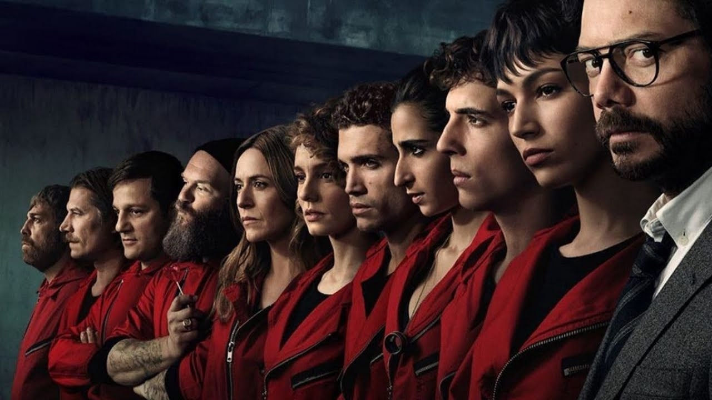

종이의 집
LA CASA DE PAPEL
넷플릭스에서 밀어주고 있는 시리즈 중 하나.
넷플릭스가 서비스되는 유럽 곳곳에 있는 광고판마다 드라마에 나오는 달리 가면이 보인다.
넷플릭스가 서비스되는 유럽 곳곳에 있는 광고판마다 드라마에 나오는 달리 가면이 보인다.
ABOUT
"잃을게 없는 사람들
사업상 제안을 하나 할게 일종의 강도야.
액수는 24억유로"
사상 최대의 무장강도를 치밀하게 계획해온 <교수>는 잃을 것 없는 8명의 범죄자를 모아 6개월간 트레이닝을 거친 후 스페인 조폐국에 투입한다.
인질까지 잡아 둔 그들이 노린건 단순한 은행 강도가 아닌 추적이 불가능한 지폐를 대량으로 찍어 낸 후 탈출하는 것..
이 모든 걸 <교수>의 시나리오에 의해 움직이게 되고, 마치 교수는 미래를 다녀온 사람처럼 경찰들의 동선과 움직임을 미리 예측해 경찰을 당황하게 만들며 탈출을 계획한다.
Episodes
-
- 1화
- 사상 최대의 무장강도를 치밀하게 계획해 온 '교수', 잃을 것 없는 8인을 지휘하여 스페인 조폐국에 침투시킨다. 인질까지 잡았으니 이젠 독 안에 든 쥐가 될 차례
-
- 2화
- 인질 석방에 투입된 것은 협상가 라켈 무리요 뿐만이 아니다. 정보부가 얼쩡거리는 이유는? 석방 협상이 긴박해지고, 싸움은 시작되었다.
-
- 3화
- 일부 멤버의 이미지가 유출되고 아르투로는 필사적으로 살길을 모색한다. 바에서 만난 남자를 의심하는 라켈. 순조롭게 계획이 틀어진 것은 삶이 늘 그렇듯 사랑 탓이었다.
-
- 4화
- 라켈에게 개인적인 긴급상황이 발생한다. 총성을 들은 인질들은 겁에 질리고, 모스크바는 베를린의 명령을 이행한 사람이 아들임을 알게 된다. 열린 문은 투항의 신호인가?
-
- 5화
- 의료진 진입이 허용된 틈을 타 경찰이 잠입한다. 지금껏 모든 걸 내다본 교수와 그보다 한 수 앞을 내다봐야 하는 라켈. 트로이의 목마는 누구의 차지가 될 것인가.
-

- 6화
- 상태가 나빠지는 모니카. 리우는 뉴스 보도에 심기가 불편해지고, 교수는 계책이 통한 걸 즐긴다. 베를린이 규칙을 어기자, 도쿄는 교수에게 보고하라고 종용한다.
-
- 7화
- 경찰이 단서를 잡고 한 멤버의 실수까지 더해져 정체가 드러나기 일보 직전. 좁혀지는 수사망의 한가운데 선 교수는 위기를 모면하려면 촌각을 다투며 기지를 발휘해야 한다.
-
- 8화
- 리우와 대화하는 앨리슨을 보고 다그치는 도쿄. 라켈은 언론의 호된 질타를 받고 벼랑 끝으로 몰린다. 놈들이 늘 미꾸라지처럼 빠져나가다니, 누군가 정보를 흘리는 걸까?
-

- 9화
- 목격자의 진술을 막으려 전력질주하는 교수. 실명이 밝혀지고 중상모략 당한 베를린은 복수의 칼을 간다.
-
- 10화
- 라켈은 인질들이 무사한지 확인하려 건물 안으로 진입한다. 한편, 나이로비는 앨리슨에게 조언을 해준다.